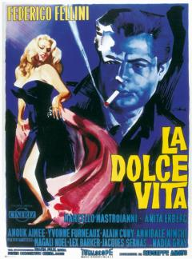

Il primo successo arriva nel 1953, con “I vitelloni”, Leone d’argento al festival di Venezia e lancio di Alberto Sordi come attore ma il film che ne segnò l'assoluta consacrazione anche al di fuori dei confini nazionali, fu “La strada”, del 1954. Il film, ricco di poesia, racconta il violento e turbolento rapporto fra due artisti di strada, Gelsomina, interpretata da Giulietta Masina, e Zampanò, interpretato da Anthony Quinn. Gelsomina, personaggio memorabile e tenerissimo, è entrato nella storia del cinema. Nel 1957 viene premiato con l' Oscar come miglior film straniero.
Nel 1960 esce “La dolce vita”, film simbolo di un’intera epoca che destò scalpore e polemiche perché, oltre a illustrare situazioni fortemente erotiche, descriveva una certa decadenza morale che strideva con il benessere economico della società italiana.[39]
Interprete del film, insieme con Marcello Mastroianni, la svedese Anita Ekberg, che sarebbe rimasta, con la scena del bagno nella Fontana di Trevi, nella memoria collettiva. Il film fu premiato con la Palma d’oro al festival di Cannes.
E’ del 1963 il film dal titolo otto e mezzo. Premiato con un Premio Oscar, il film è considerato uno dei più grandi della storia del cinema, tanto da essere stato inserito dalla rivista inglese Sight & Sound al 9º posto nella graduatoria delle più belle pellicole mai realizzate.
Nei decenni successivi Fellini, acclamato dalla critica internazionale e considerato un mostro sacro del cinema, entra in una fase di maturità in cui riesce a profondere i suoi tesori di bravura per il solo piacere di farlo.
Nel 1975 con “Amarcord” («mi ricordo» in dialetto romagnolo) vinse ancora l'Oscar.
Infine ricordiamo “E la nave va” del 1983, Ginger e Fred del 1986, e, nel 1990, il lavoro dell'addio al cinema, “La voce della luna”.
La pellicola è una sorta di invocazione al silenzio, contro il frastuono della vita contemporanea.
Il 29 marzo 1993 Fellini ricevette l’Oscar alla carriera. E’ questo il suo ultimo riconoscimento in quanto egli si spense il 31 ottobre dello stesso anno a Roma all’età di 73 anni.
I Vitelloni - 1953
Durata: 1h 47 m
Diritti: Sono presenti su tutti diritti d’uso
La Strada - 1954
Durata: 1h 55 m
Diritti: Sono presenti su tutti diritti d’uso
La Dolce vita - 1963
Durata: 2h 58 m
Diritti: Sono presenti su tutti diritti d’uso

Amarcord - 1975
Durata: 2h 7m
Diritti: Sono presenti su tutti diritti d’uso